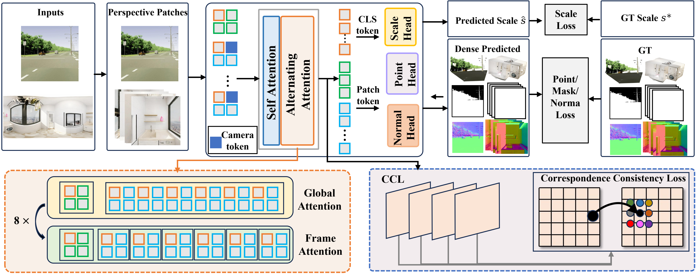

While monocular depth estimation has achieved significant progress, achieving generalized metric depth estimation for both narrow field-of-view (FoV) perspectives and 360° panoramas remains an unsolved challenge. Existing methods are often tailored to specific camera types and struggle to produce accurate metric depth that generalizes across diverse settings. This limitation stems from two key challenges: the inherent geometric discrepancy between perspective and panoramic cameras, and the scarcity of panoramic training data with metric annotations. In this work, we reformulate and introduce DepthMaster, a unified metric depth estimation framework for both perspective and panoramic images. Instead of directly learning geometric distortions, we decompose any panoramic image into a set of overlapped perspective patches. This strategy simultaneously resolves geometric differences by unifying all inputs into a canonical perspective representation, and mitigates data scarcity by leveraging metric depth priors from vast perspective-image datasets. Furthermore, a novel correspondence consistency loss is introduced to ensure metric and geometric consistency in overlapped regions. Trained on a mixed dataset containing only one panorama dataset, DepthMaster achieves state-of-the-art zero-shot performance on 11 diverse datasets spanning both perspective and panoramic domains, demonstrating remarkable generalization. It outperforms not only universal methods but also leading specialist models. The code and models will be publicly available.

We showcase a diverse gallery of panoramic 3D reconstructions produced by DepthMaster. These results span a wide range of indoor and outdoor scenes, including both real-world captures and AI-generated panoramas, demonstrating the versatility and robustness of our unified framework on 360° inputs.
We provide side-by-side comparisons of panoramic indoor 3D reconstructions against leading methods. Indoor scenes pose unique challenges due to complex room layouts and close-range structures. DepthMaster consistently recovers more accurate geometry with fewer artifacts, benefiting from its perspective-patch decomposition strategy.
We further compare panoramic outdoor 3D reconstructions with competing approaches. Outdoor panoramas involve large depth ranges and open environments that are particularly challenging for existing methods. DepthMaster maintains metrically consistent and geometrically faithful reconstructions across these diverse outdoor settings.
Note: Since competing methods do not predict sky masks, their outdoor reconstructions contain a large number of outlier points (especially in sky regions). For a fairer visual comparison, we apply our predicted sky mask and additional depth-range thresholds to filter out these outliers from competing methods' point clouds.
● Scroll to zoom in/out
● Drag to rotate
● Press "shift" and drag to pan
Beyond panoramic inputs, DepthMaster also excels on standard perspective images. Below we present a gallery of perspective 3D reconstructions covering realistic photographs and stylized artwork, highlighting the strong generalization of our unified model across different visual domains.
Finally, we present side-by-side comparisons on perspective images against state-of-the-art monocular depth estimation methods. Select different methods from the dropdown menus to interactively examine the reconstruction quality. DepthMaster produces sharper geometric details and more accurate metric depth, validating its effectiveness as a truly unified depth estimation framework.
● Scroll to zoom in/out
● Drag to rotate
● Press "shift" and drag to pan
● Click on the buttons at the top to switch texture color on/off